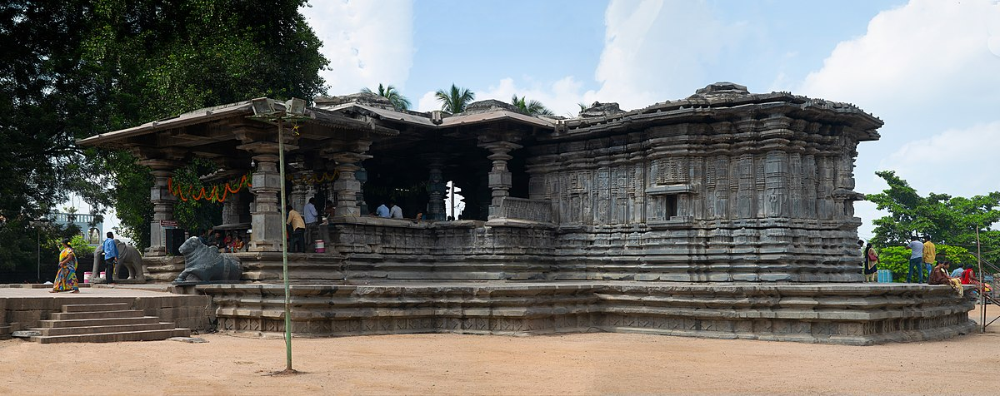
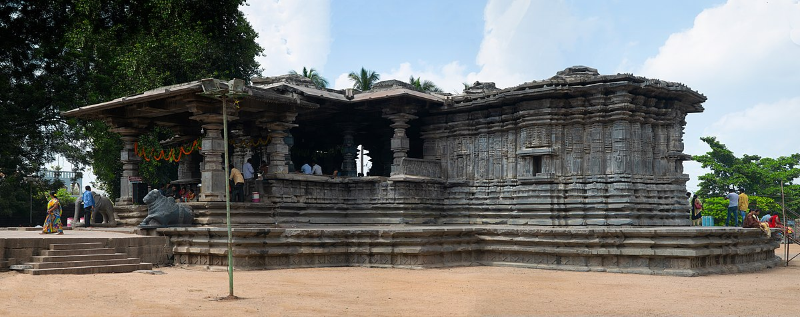

Welcome to Warangal Tourism


 

Warangal, a city rich in history and heritage, is one of the most fascinating tourist destinations in India. Known for its stunning architectural marvels, ancient temples, and historical significance, Warangal offers a perfect blend of culture, nature, and tradition. Our website is designed to help you explore the best of Warangal’s heritage, book accommodations, and browse through breathtaking images of this historic city.
Culture & Heritage
People of Warangal consists of both Hindus and Muslims. Most of people speak Telugu and Urdu with some knowledge of Hindi and English as well. The people are mostly educated with an overall literacy rate of 84.16 percent including 76.79 % female literacy and 91.54 % male literacy. Most of the people are dependent on agriculture for their living; through tourism is another option of earning money here.
Some of the renowned people who were born in Warangal district include Pendyala Varavara Rao, Daasaradhi Krishnamacharyulu, Bammera Pothana, Chukka Ramaiah, Kaloji Narayana Rao and Pamulaparti Venkata Narasimha Rao.
The attire of Warangal is majorly impacted by the attire of entire Andhra Pradesh. Most of the women prefer to wear saree, especially in the rural region of the area, while on the other hand men prefer to wear lungi with shirt, which is made of cotton and is mainly of white color. However, with the development of recent years, people are shifting towards western clothes including jeans, t-shirs, skirts, shorts, pants etc., as they are comfortable and more stylish as compared to the traditional wear.
Hindu and Muslim both the region prevail in this are, hence all the festivals of Hindus including Holi, Diwali, Dussera, Raksha Bandhan, Ram Navami, Vinayak Chavithi, Sankranthi, Ugadi etc, and all festival of Muslims including Ramadan, Eid-Ul-Fitr, Eid al-Adha, Milad Un Nabi, Moharram etc. Are celebrated with full enthusiasm among the people. Apart from these Bonalu Festival, Bathukamma Festival, Kakatiya Festival, Shakambari Festival and Sammakka-Sarakka Jatra are special festivals of the region and are celevrated here only with some of the other parts of Andhra Pradesh.
Warangal is a heritage city and comes under the list of World Heritage places by UNESCO. Its architecture is affected by many different dynasties over the years of history and mostly influenced by Kakatiyan Dynasty around the 12th Century. Most of its attractions including Thousand Pillar Temple, Ramappa Temple, Ghanpur Group of Temple, Warangal Fort and Khush Mahal are of Kakatiyan period only. They used to built monuments out of single rock hence the city was previously known as Orugallu meaning “carved out of single rock”.
What You Will Find on Our Website
- Heritage Sites: Discover Warangal’s iconic landmarks, including the Kakatiya Fort, Thousand Pillar Temple, and Ramappa Temple.
- Hotel Booking: Plan your stay by booking a hotel in the city with ease.
- Gallery: Browse through a collection of beautiful photographs capturing the essence of Warangal.